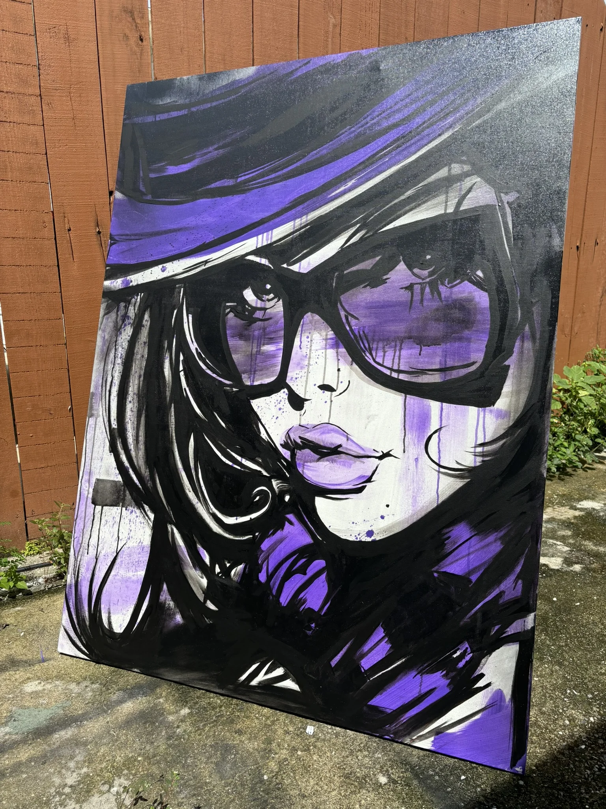

Cómo Elegir un Artista de Tatuajes en Tampa: Guía Experta 2026

Seleccionar el artista de tatuajes correcto en Tampa, Florida es una de las decisiones más importantes que tomarás en tu viaje de tatuajes. Un artista hábil puede transformar tu idea en arte corporal impresionante, mientras que la elección equivocada puede llevar al arrepentimiento. Aquí está tu guía completa para encontrar el artista de tatuajes perfecto en el estudio premier de Tampa.
Investiga a los Artistas de Tatuajes de Tampa a Fondo
Revisa Portafolios: Cada artista de tatuajes profesional mantiene un portafolio que muestra su mejor trabajo. Busca consistencia en la calidad, atención al detalle y experiencia en el estilo que deseas. Los artistas de Panda Tattoo Studio se especializan tanto en trabajo en blanco y negro como en color vibrante—ve nuestro extenso portafolio en pandatattooink.com.
Consulta Redes Sociales: Instagram y Facebook proporcionan actualizaciones en tiempo real del trabajo reciente de los artistas. Sigue a los artistas de tatuajes de Tampa para ver su producción diaria, no solo sus mejores piezas.
La Especialización Importa
Diferentes artistas sobresalen en diferentes estilos:
- Realismo: Requiere habilidades excepcionales de sombreado y atención al detalle
- Tradicional: Líneas audaces e imágenes icónicas de tatuajes americanos
- Blanco y Negro: Maestría de gradientes y profundidad sin color
- Trabajo en Color: Comprensión de la teoría del color y aplicación vibrante
- Línea Fina: Mano firme para diseños delicados y minimalistas
Visita el Estudio en Persona
Antes de comprometerte, visita los posibles estudios de tatuajes de Tampa para evaluar:
- Limpieza y organización
- Atmósfera profesional
- Interacción artista-cliente
- Calidad del equipo
- Licencias y certificaciones exhibidas
El Proceso de Consulta
Los estudios de tatuajes de calidad de Tampa como Panda Tattoo ofrecen consultas gratuitas donde puedes:
- Discutir tus ideas de diseño en detalle
- Revisar el portafolio del artista juntos
- Obtener estimaciones de precios precisas
- Preguntar sobre curación y cuidados posteriores
- Evaluar la compatibilidad con tu artista
Señales de Alerta a Evitar
- Falta de disposición para mostrar portafolios o responder preguntas
- Precios que parecen demasiado buenos para ser verdad
- Condiciones o prácticas insalubres
- Falta de licencias adecuadas
- Apresurar la consulta
- Sin instrucciones claras de cuidados posteriores
Confía en Tus Instintos
Debes sentirte cómodo y confiado con tu artista elegido. En Panda Tattoo Studio, nos enorgullecemos de crear un ambiente acogedor donde los clientes se sienten escuchados y valorados. Nuestros artistas con sede en Tampa trabajan colaborativamente contigo para asegurar que tu tatuaje supere las expectativas.
Reserva con lo Mejor de Tampa
¿Listo para trabajar con artistas de tatuajes experimentados y profesionales que se preocupan por tu visión? Contacta a Panda Tattoo Studio en pandatattooink.com para programar tu consulta gratuita. Nuestro equipo está listo para ayudarte a elegir el artista perfecto para tu próximo tatuaje.
Palabras clave: artistas de tatuajes Tampa, cómo elegir artista de tatuajes, mejor artista de tatuajes Tampa Florida, artista profesional de tatuajes Tampa, artista de tatuajes cerca de mí, Panda Tattoo Studio Tampa, encontrar artista de tatuajes Tampa Bay